Kassieren und anschreiben an der Theke, den Verein im Browser verwalten, den Deckel online aufladen.
VereinsDeckel ist ein Anschreibsystem mit angeschlossener Kasse. Gekauft wird an der Theke auf dem Tablet — bar, mit Karte oder auf den Deckel eines Mitglieds. Alles Weitere erledigt der Kassier im Browser.
| Teil | Wo | Wer |
|---|---|---|
| App auf einem oder mehreren Tablets | an der Theke, auch ohne Internet | wer Schicht hat |
| Verwaltung | im Browser unter /verwaltung, am PC und am Handy | Kassier, Vorstand, Budenwart, Rechnungsprüfer |
| Dein Deckel | im Browser unter /konto/<kürzel> | jedes Mitglied mit E-Mail-Adresse im Profil |
| Systemverwaltung | im Browser unter /verwaltung/system | wer den Server betreut (Hauptadmin) |
Die Tablets und der Server gleichen sich ab: Was an einer Theke gebucht wird, steht nach spätestens einer Minute auf den anderen Tablets und in der Verwaltung. Fällt das Internet aus, verkauft die Theke trotzdem weiter — die Buchungen warten auf dem Tablet und gehen hoch, sobald die Verbindung wieder steht. Der Verkauf wartet nie auf das Netz.
Ein Deckel ist das Konto eines Mitglieds. Ist er im Minus, schuldet das Mitglied dem Verein etwas; im Plus hat es Guthaben. Wie weit ein Deckel ins Minus darf, legt seine Kategorie fest (etwa „Aktive bis −50 €“). Der Stand wird nie von Hand geändert, sondern immer aus den Buchungen gerechnet: Verkäufe auf den Deckel, Aufladungen, Korrekturen.
| Farbe | Bedeutung |
|---|---|
| Tinte | alles Alltägliche — Knöpfe wie Speichern oder Anlegen, die Auswahl in Filtern und Umschaltern |
| Grün | Geld und Bestätigung — Bezahlen, Kasse öffnen und schließen, bezahlt, gebucht |
| Messing | der Deckel — das gewählte Mitglied, Aufladen |
| Blau | Karte und Auswertung |
| Bernstein | Aufmerksamkeit — etwas sollte man sich ansehen |
| Rot | Fehler oder etwas, das sich nicht rückgängig machen lässt — und sonst nichts |
Die Vereinsfarbe färbt nur Navigation, Kopfzeile und die Symbole der Mitglieder. So bestätigt ein Verein mit roter Farbe nie eine Zahlung in derselben Farbe, in der die App Fehler meldet.
Die App ist für das Tablet an der Theke gebaut: große Knöpfe für den Daumen, alles Wichtige in den unteren zwei Dritteln. Wer Schicht hat, braucht davon vier Dinge: Kasse öffnen, verkaufen, bezahlen lassen, Kasse schließen.
Links steht die Leiste mit Verkauf, Übersicht und Historie. Auf einem kleinen Tablet wie dem Galaxy Tab Active3 liegt der Rest unter Mehr ganz unten: Produkte, Lagerbestand, Mitglieder, Kategorien, Auswertung und Einstellungen. Darüber steht, wie es um den Abgleich steht: Abgeglichen mit Uhrzeit, „3 warten“, solange Buchungen noch zum Server müssen, und in Bernstein Offline oder Abgemeldet (Kapitel 6).
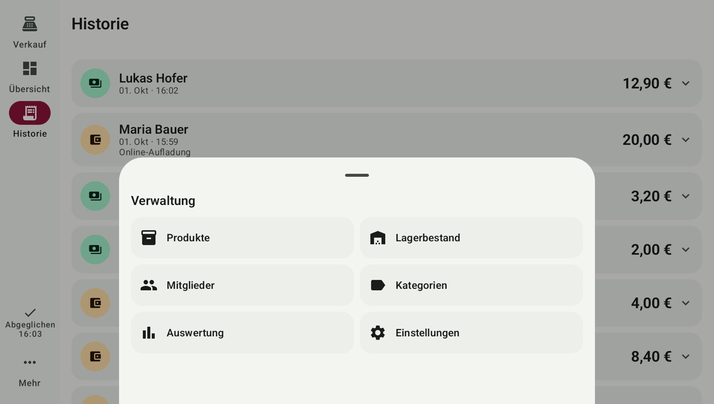
Ohne offene Kasse wird nicht kassiert. Solange die Kasse zu ist, steht im Warenkorb rechts statt „Bezahlen“ der Knopf Kasse öffnen.
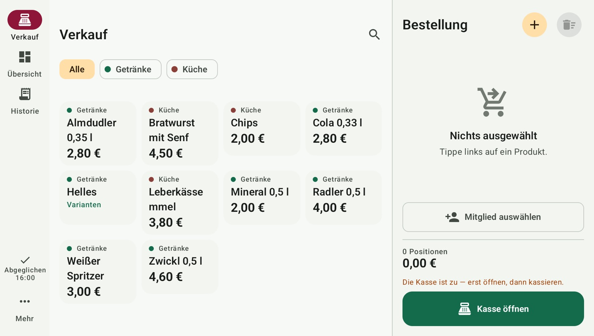
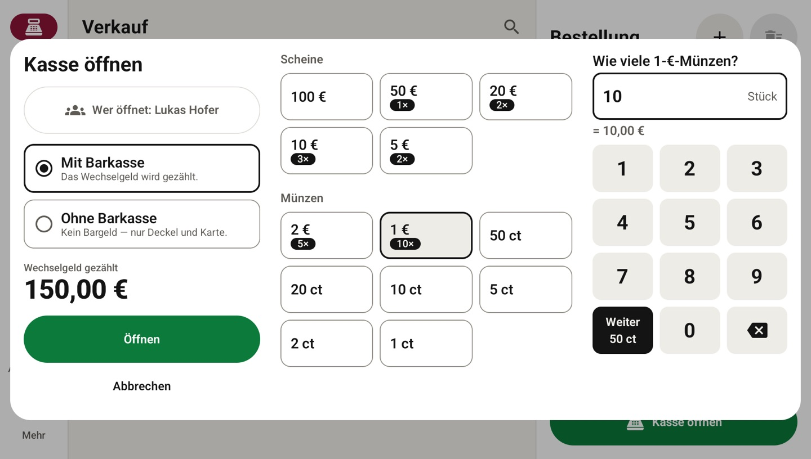
Die Produkte stehen als Kacheln in der Mitte, oben die Kategorien zum Filtern. Ein Tipp legt ein Produkt in die Bestellung rechts, den Warenkorb; gibt es ein Produkt in mehreren Größen (etwa Helles 0,5 l und 0,3 l, auf der Kachel steht dann „Varianten“), fragt die App nach der Größe. In der Bestellung ändern − und + die Menge; steht eine Position auf 1, nimmt der Mülleimer sie heraus.
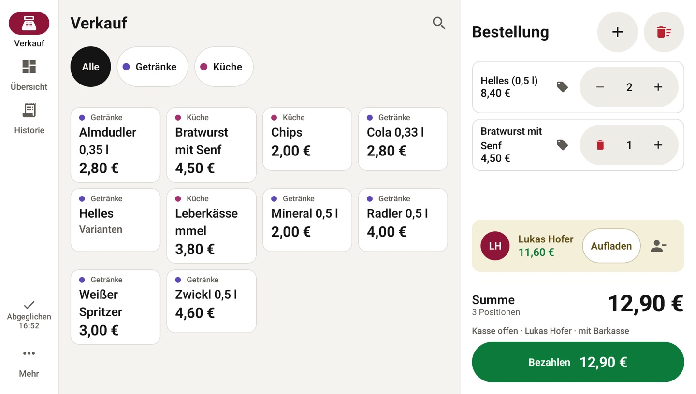
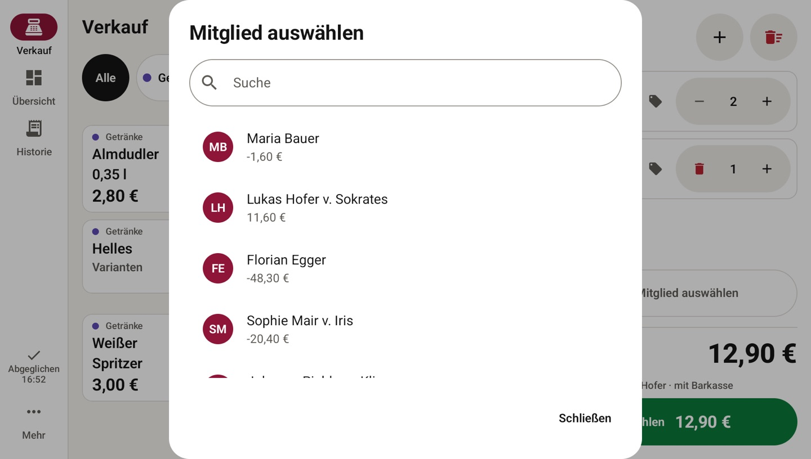
Bezahlen öffnet die Auswahl der Zahlart. Oben steht der Gesamtbetrag.
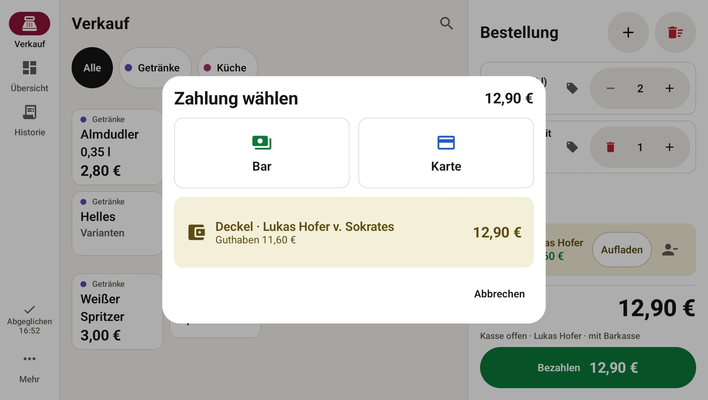
Unter Gegeben den erhaltenen Betrag eintippen oder einen der Knöpfe nehmen (Passend, 5 €, 10 €, 20 €, 50 €). Die App zeigt das Rückgeld — grün, sobald welches fällig ist. Behält der Verein das Rückgeld, Rückgeld als Trinkgeld antippen. Mit Abschließen ist gebucht. Ist die Kasse ohne Barkasse geöffnet, ist „Bar“ durchgestrichen und lässt sich nicht wählen.
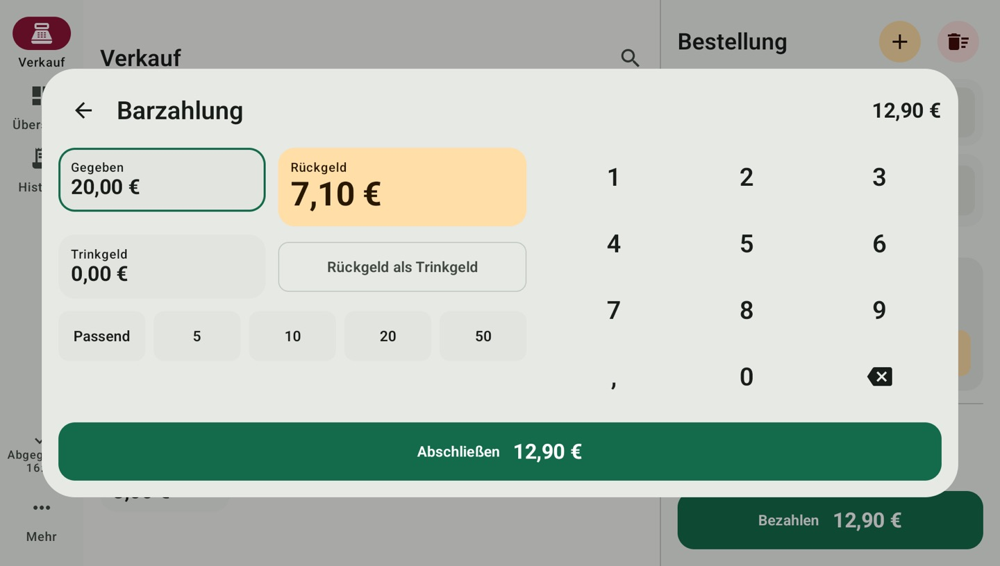
Mit einem SumUp-Kartenterminal: Karte, dann Abschließen — das Terminal zeigt den Betrag, der Gast hält die Karte hin. Gebucht wird erst, wenn SumUp die Zahlung bestätigt. Trinkgeld: Fragt das Terminal selbst danach, wählt es der Gast dort, mit gewähltem Mitglied auch bei einer Aufladung. Sonst bietet die App es vorher an (Kein, 5 %, 10 %, 15 %, aufgerundet auf 50 Cent) — auf den Einkauf, nicht auf eine Aufladung.
Einmal je Tablet: Den SumUp-Schlüssel trägt der Kassier in der Verwaltung ein (Kapitel 3.11), er kommt mit dem Abgleich. Dann am Tablet unter Mehr → Einstellungen → Kartenzahlung auf Bei SumUp anmelden tippen.
Ist ein Mitglied gewählt, steht unten die große Kachel Deckel mit seinem Namen und Guthaben. Ein Tipp bucht — ohne zweite Rückfrage. Reicht der Rahmen seiner Kategorie nicht, ist die Kachel aus und nennt das Limit; eine Aufladung lässt sich nicht vom Deckel bezahlen. Einen gesperrten Deckel bucht die App nicht. Dann bleibt Bar oder Karte.
Die Lupe oben rechts, neben dem Warenkorb, öffnet die Suche. Langes Drücken auf eine Produktkachel blendet das Produkt auf diesem Tablet aus — etwa die Getränke auf dem Tablet in der Küche. Ausgeblendetes steht nicht mehr unter „Alle“ und in seiner Kategorie, sondern unter Ausgeblendet ganz hinten in der Kategorienleiste; verkaufen lässt es sich dort weiterhin. Langes Drücken dort blendet es wieder ein.
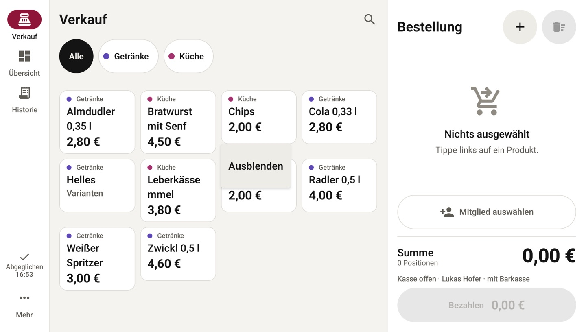
Die Übersicht zeigt den Tag: Umsatz und Zahl der Buchungen, die laufende Kasse — wer sie führt, seit wann, was bar dazugekommen ist und was in der Lade sein müsste —, Hinweise wie „Lagerbestand niedrig“ und zwei Abkürzungen zu Verkauf und Mitgliedern.
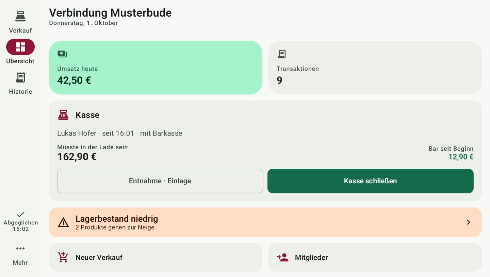
Unter Entnahme · Einlage: Entnahme oder Einlage wählen, Betrag, wofür oder woher (etwa „Bank“ oder „Bareinkauf“) und wer, dann Buchen. Das Kassenbuch in der Verwaltung führt es mit.
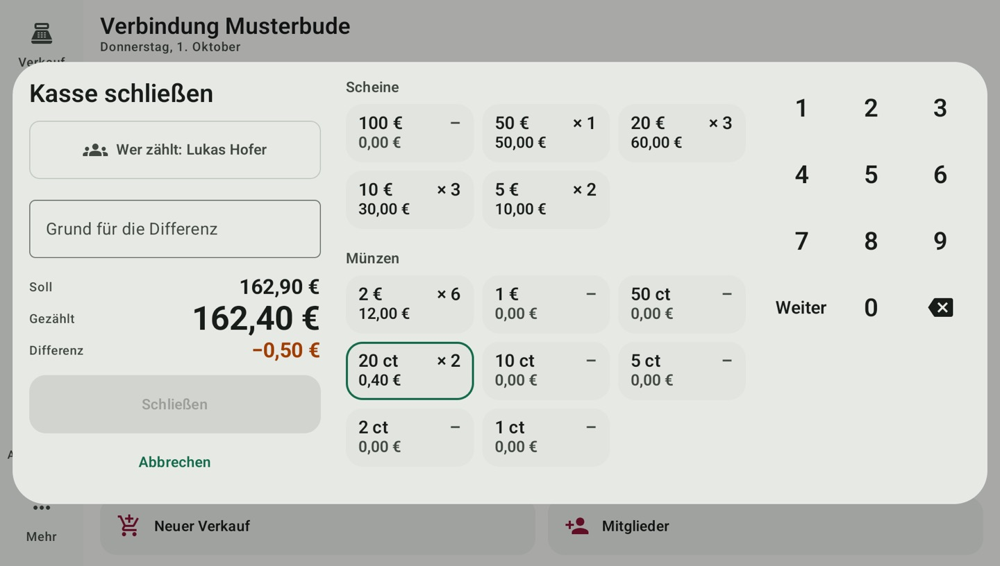
Die Historie listet alle Buchungen, die neuesten oben, mit Mitglied (oder „Barverkauf“), Zeit und Betrag. Das Symbol zeigt die Zahlart: grün bar, blau Karte, Messing Deckel und Guthaben — auch eine Online-Aufladung eines Mitglieds steht hier. Ein Tipp klappt eine Buchung auf und zeigt, was verkauft wurde. Gelöscht oder storniert wird hier nichts: Ist auf einen Deckel falsch gebucht worden, gleicht man es unter Mitglieder mit einer Korrektur aus (Kapitel 2.8) oder der Kassier in der Verwaltung. Eine falsche Barbuchung zeigt sich beim Schließen der Kasse als Differenz — dort den Grund eintragen.
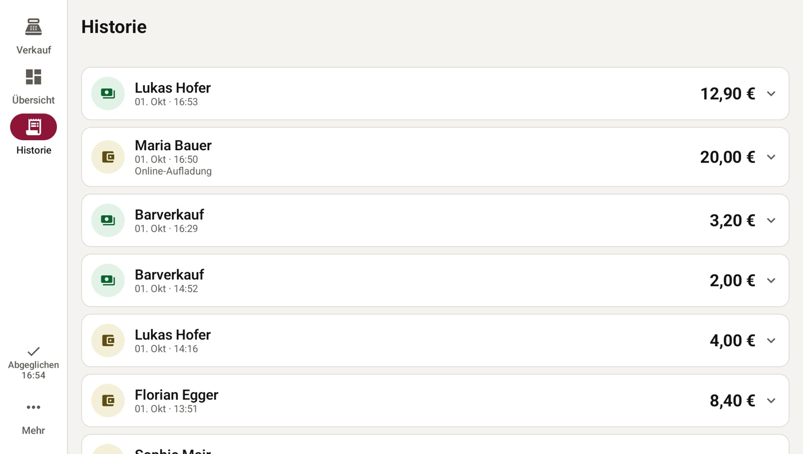
Unter Mehr → Mitglieder stehen alle Mitglieder mit dem Stand ihres Deckels. Seine Farbe sagt, wie es darum steht: grün im Plus, schwarz bei null, grau im Minus, Bernstein im letzten Viertel des Rahmens, rot über dem Rahmen — wie bei Florian Egger im Bild, einem Gast, der gar nicht ins Minus dürfte.
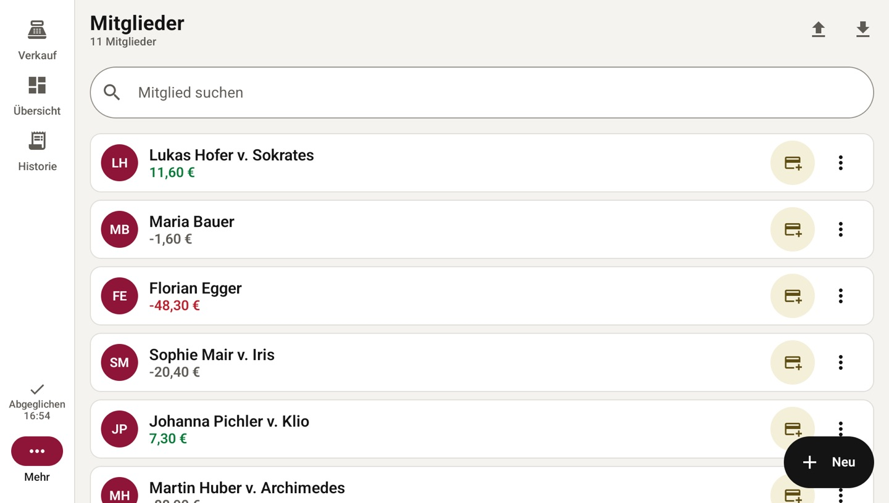
Rechts neben jedem Mitglied: Guthaben aufladen und das Menü mit Bearbeiten und Löschen. Oben die Suche und, als Pfeile, Import und Export als CSV-Datei; unten rechts Neu.
Beim Aufladen sagt die Zahlart, wie das Geld gekommen ist:
Betrag antippen oder eintragen, Aufladen (bei einer Korrektur Korrigieren). Ist ein Deckel gesperrt — das legt der Kassier in der Verwaltung fest —, wird nicht mehr auf ihn angeschrieben; Bar, Karte und Aufladen gehen weiter.
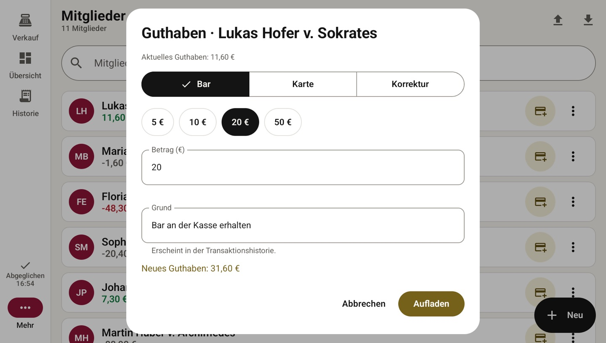
Produkte: das Sortiment mit Preisen, Kategorien und Größen. Zu jedem Produkt gehört ein Rezept — was ein Verkauf dem Lager entnimmt, etwa 0,5 l Helles aus dem Fass. Gekoppelte Tablets bekommen das Sortiment aus der Verwaltung; geändert wird es am besten dort.
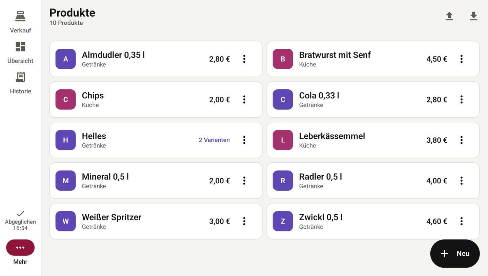
Lagerbestand: was verfügbar ist. Beim Fassbier steht das Fass am Hahn dabei — wie viel gezapft ist und was ungefähr noch drin ist. Ist es leer, Fasswechsel: „Leer“, dann lernt die App daraus, wie viel ein Fass wirklich hergibt; oder „Kaputt / verdorben“, dann wird der Rest als Verderb gebucht. Das nächste Fass kommt mit Anstechen an den Hahn.
Was eine Lieferung bringt, ist ein Wareneingang: unten rechts für die ganze Lieferung, mit den Beträgen vom Kassabon und auf Wunsch einem Foto davon — oder + Eingang bei einem einzelnen Artikel. Unter Eingänge stehen die bisherigen. Geht etwas zur Neige, sagt es die Übersicht.
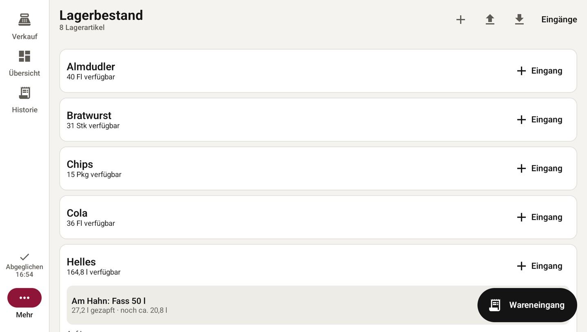
Kategorien: die Mitgliederkategorien mit ihrem Rahmen — wie weit ein Deckel ins Minus darf.
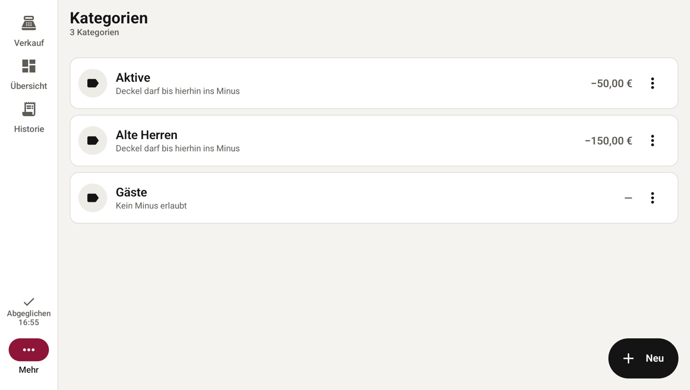
Für den schnellen Blick an der Theke: Umsatz, Trinkgeld, Bar und Karte, die meistverkauften Produkte — für heute, sieben Tage, dreißig Tage oder gesamt. Die ausführlichen Berichte stehen in der Verwaltung.
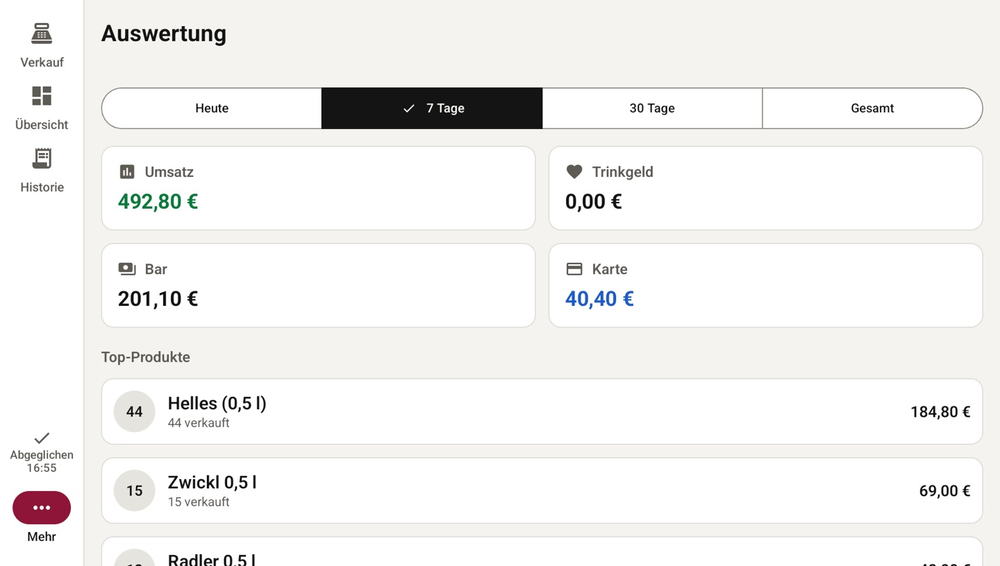
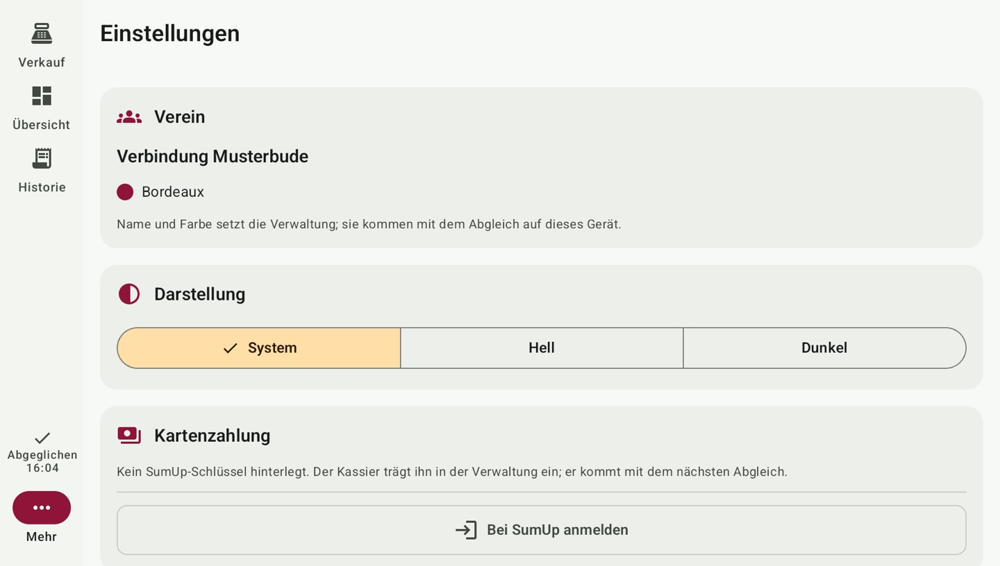
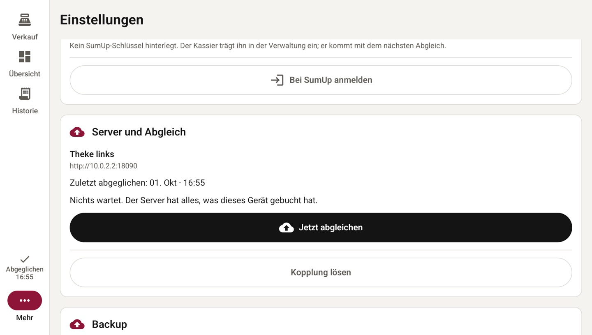
Abgemeldet heißt: Der Server kennt dieses Tablet nicht mehr (etwa weil es in der Verwaltung gesperrt wurde). Dann in der Verwaltung einen neuen Code erzeugen und am Tablet Neu anmelden — nicht „Kopplung lösen“, das würde die wartenden Buchungen kosten.
Unter Backup: zuerst Speicherort wählen. Das automatische Backup sichert dann täglich im Hintergrund — bei einem gekoppelten Tablet schaltet es die Verwaltung ein oder aus. Von Hand: Sichern. Einspielen legt eine Sicherung bereit; übernommen wird sie, wenn die App beendet und neu gestartet wird.
Der Betreuer des Servers kann eine Mindestversion der App festlegen. Liegt die App auf einem Tablet darunter, zeigt sie nur noch diesen Hinweis. Kassieren geht erst nach dem Update; der Abgleich läuft weiter, es geht nichts verloren.
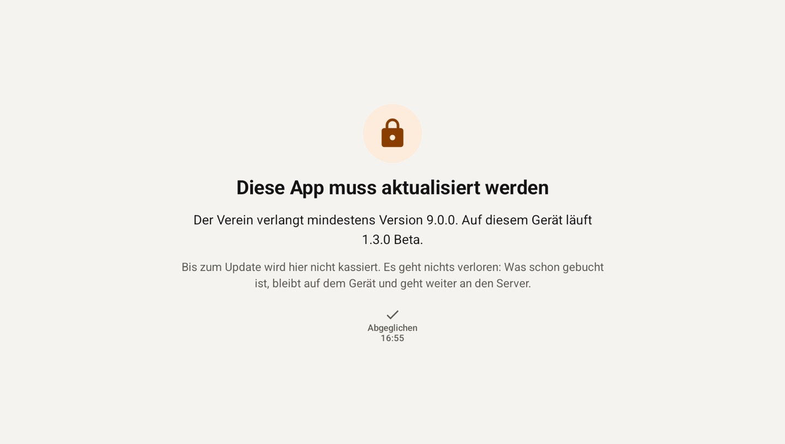
Die Verwaltung läuft im Browser, am PC und am Handy. Sie zeigt alles, was die Tablets gebucht haben, und erledigt, was an der Theke keinen Platz hat: Mitglieder, Abrechnung, Kasse, Bücher, Lager und Einkauf.
Unter https://<server>/verwaltung anmelden — mit dem Anmeldenamen und dem Kürzel des Vereins, getrennt durch @, etwa karl@musterbude. Beim ersten Verein auf einem Server genügt der Name allein. Das Passwort vergibt der Administrator des Vereins.
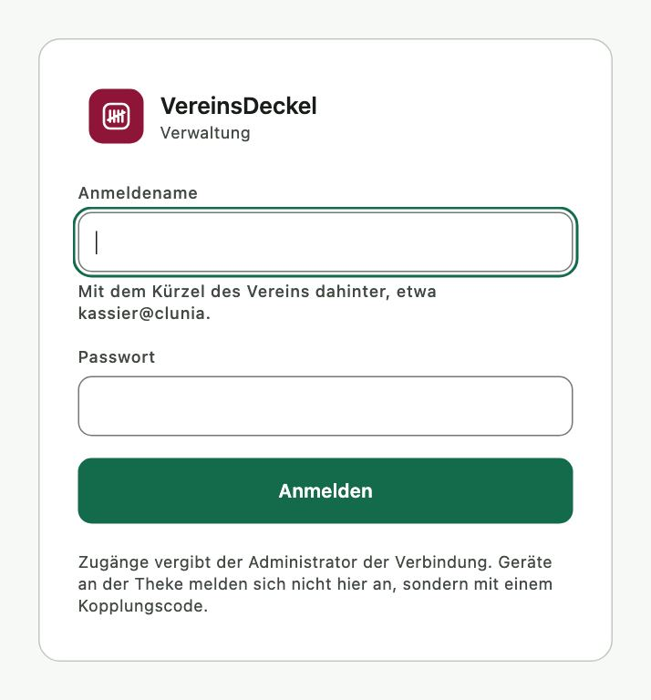
Nach zwölf Stunden ohne Klick meldet die Verwaltung ab; spätestens nach vierzehn Tagen muss man sich neu anmelden.
| Rolle | Sieht und darf |
|---|---|
| Administrator | alles, dazu Benutzer und Rollen, das Kürzel des Vereins |
| Kassier | Mitglieder, Abrechnung, Kasse, Berichte, Bücher, Lager, Sortiment, Einkauf, Geräte, Protokoll, Einstellungen |
| Senior und Chargen | liest mit: Übersicht, Mitglieder, Abrechnung, Kasse, Berichte, Bücher, Lager, Sortiment, Einkauf |
| Budenwart | Lager, Sortiment, Einkauf — keine Deckel |
| Rechnungsprüfer | lesend und auf Zeit: Abrechnung, Kasse, Berichte, Bücher, Einkauf, Protokoll |
Der Tag auf einen Blick: Umsatz heute nach Bar, Karte und Deckel, die letzten sieben Tage, Außenstände (was Mitglieder schulden) und Guthaben (was der Verein ihnen schuldet), die letzten Buchungen aller Tablets und der Zustand der Geräte. Hinweise in Bernstein zeigen, was sich jemand ansehen sollte — etwa eine Abrechnung, die vermutlich schon bezahlt ist.
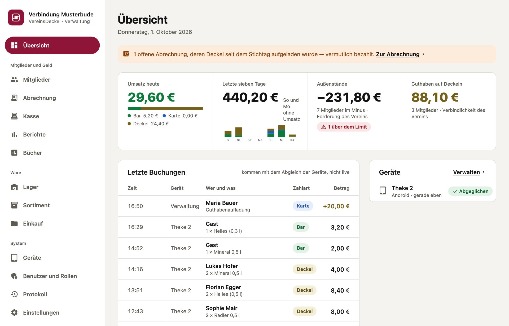
Die Liste aller Mitglieder mit Kategorie und Stand, zu suchen und zu filtern. Neue Mitglieder legt der Kassier hier an; sie stehen mit dem nächsten Abgleich auf allen Tablets. Mitglieder lassen sich auch aus einer CSV-Datei einlesen (mit Vorschau) und als CSV ausgeben.
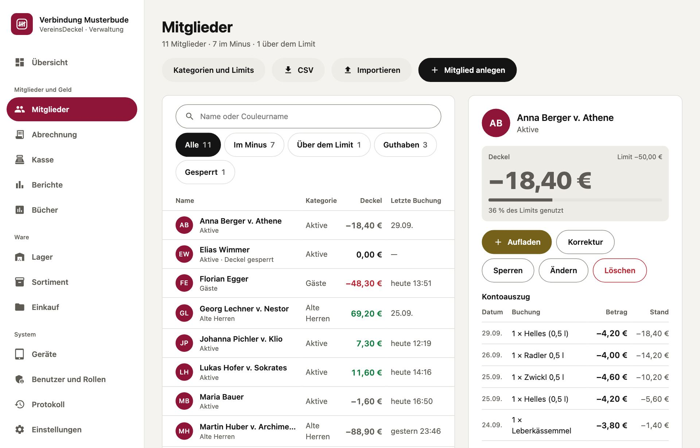
Die Seite eines Mitglieds zeigt den Kontoauszug mit jeder Buchung und dem Stand danach. Hier wird
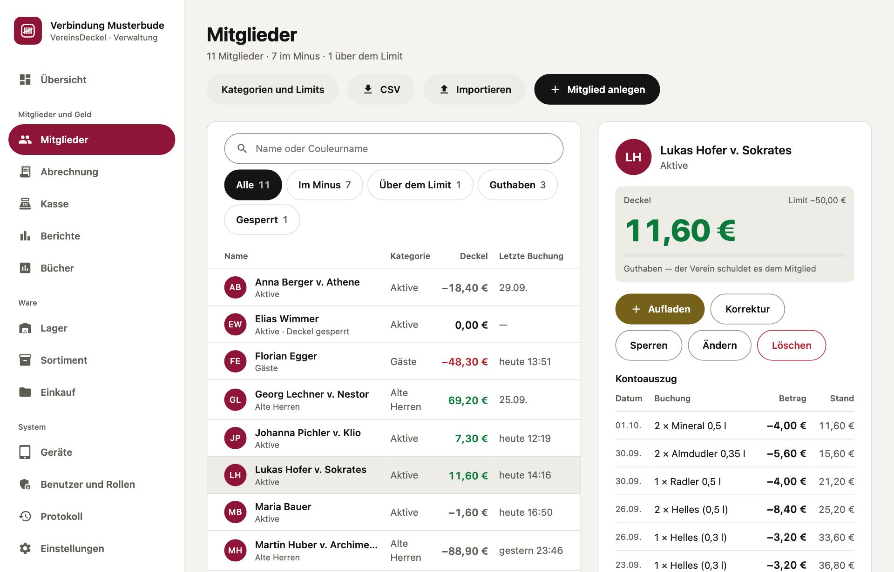
Die Bierrechnung: Ein Abrechnungslauf erstellt für jedes Mitglied, dessen Deckel am Stichtag unter der Schwelle liegt, eine Abrechnung — als PDF mit QR-Code zum Bezahlen. Versendet wird per E-Mail (wenn das Mitglied zugestimmt hat) oder gedruckt.
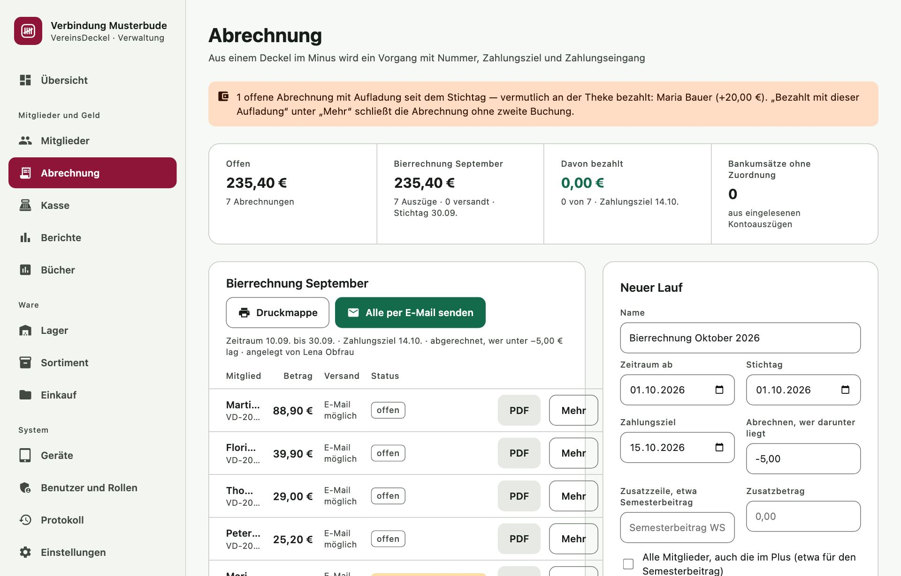
Was die Tablets an Schichten melden: der Tagesbericht je Gerät, die laufenden Schichten, das Kassenbuch mit fortgeführtem Bestand (als CSV für den Steuerberater) und das Bankbuch. Gezählt wird am Tablet; die Verwaltung rechnet Soll und Differenz und zeigt Entnahmen und Einlagen mit Grund.
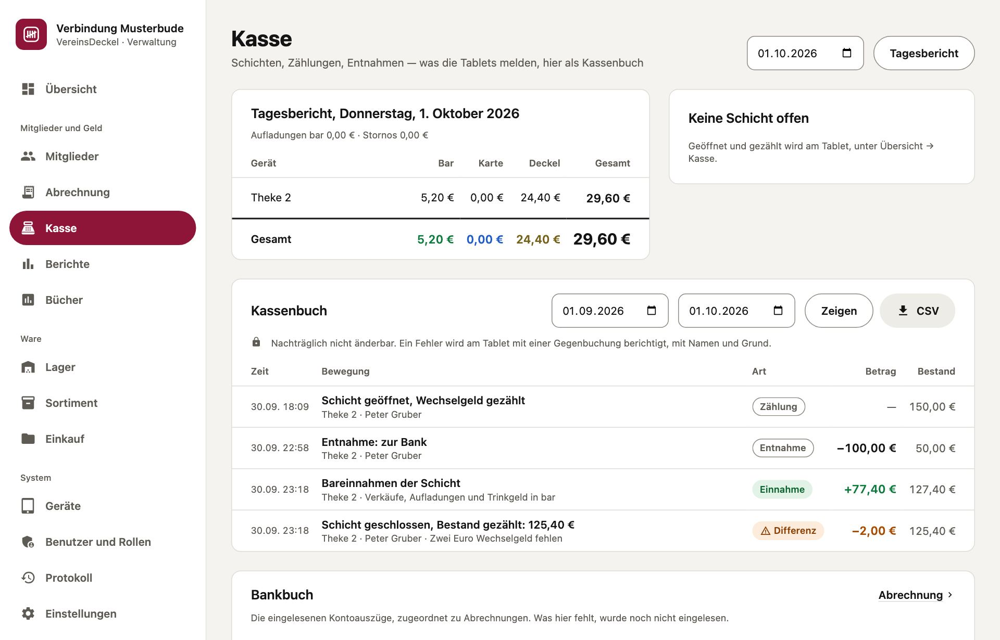
Berichte: Umsatz nach Zahlart je Monat, Aufladungen, Trinkgeld, Stornos, Wareneinsatz.
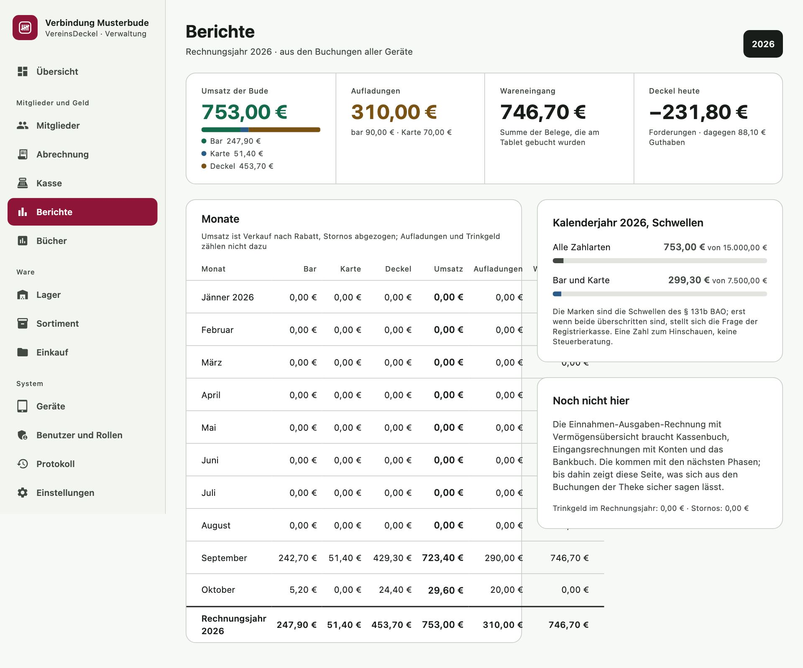
Bücher: die Einnahmen-Ausgaben-Rechnung je Rechnungsjahr mit Vorjahr, nach Konto und Bereich, und die Vermögensübersicht zum Stichtag (den Bankstand trägt der Kassier ein). Dazu zwei CSV-Ausgaben und die Prüfermappe als PDF für den Rechnungsprüfer. Alles wird aus den Buchungen gerechnet, nichts von Hand fortgeschrieben.
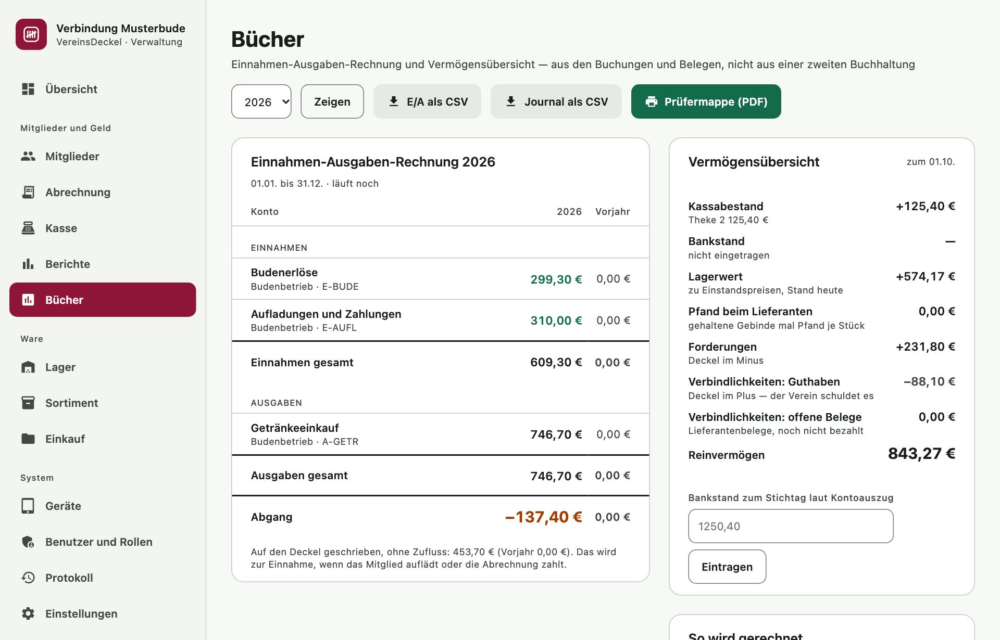
Lager: Bestand, Fässer, Mindestbestände und der Bestellvorschlag — alles unter Mindestbestand, nach Lieferant, Fässer in ganzen Gebinden. Dazu Pfand und Leergut.
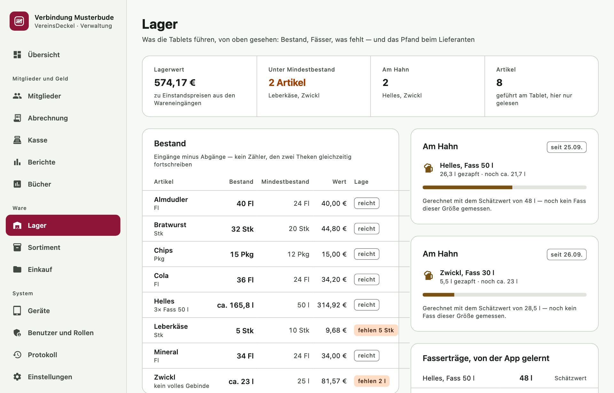
Sortiment: Produkte mit Preisen, Größen und Rezeptur, die Kategorien mit ihrem Rahmen. Was hier geändert wird, steht mit dem nächsten Abgleich auf allen Tablets.
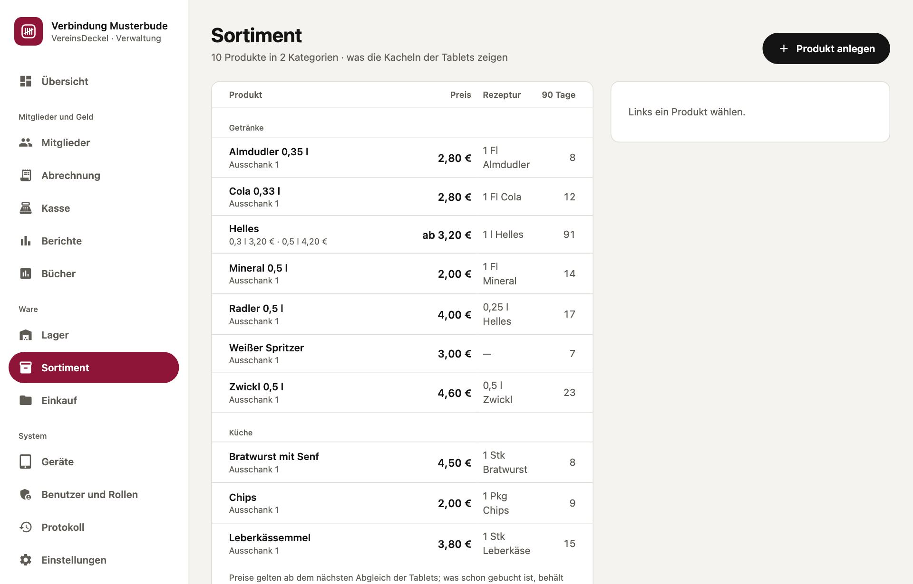
Einkauf: Eingangsrechnungen mit Datei, Fälligkeit und Zahlung, zugeordnet zu Lagerartikeln und Konten. Rechnungen können per E-Mail kommen: Die Verwaltung ruft das Postfach des Vereins ab, liest PDF-Rechnungen und schlägt Lieferant, Betrag und Positionen vor.
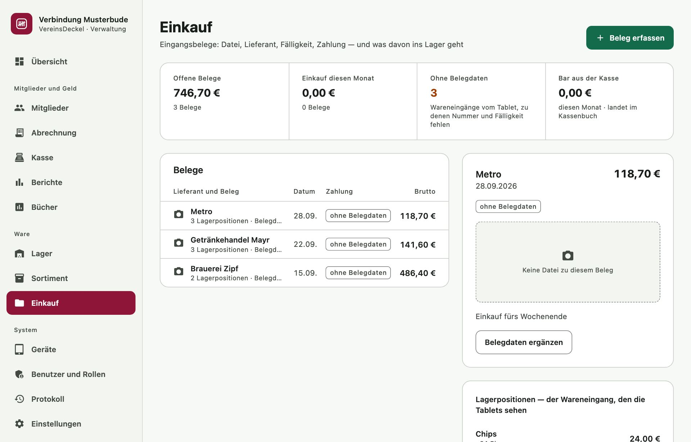
Hier werden Tablets gekoppelt (Kopplungscode erzeugen, siehe 2.11) und gesperrt — etwa wenn eines verloren geht. Ein gesperrtes Tablet verkauft weiter, gleicht aber nicht mehr ab, bis es mit einem neuen Code neu angemeldet wird. Die Liste zeigt, wann jedes Gerät zuletzt abgeglichen hat.
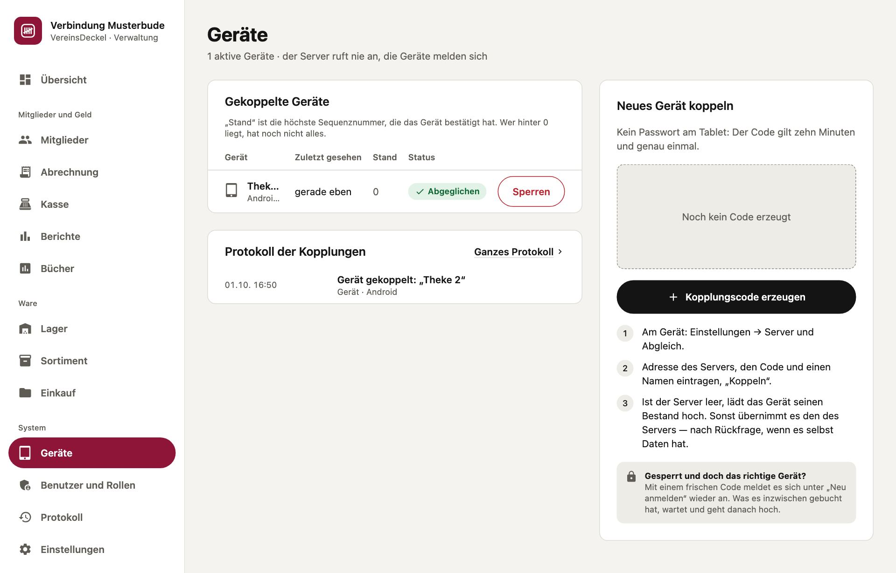
Unter Benutzer und Rollen legt der Administrator Zugänge an: Name, Anmeldename, Rolle, erstes Passwort, auf Wunsch „Zugang bis“ (für den Rechnungsprüfer). Das Passwort persönlich weitergeben, nicht per E-Mail. Chargen wechseln jedes Semester — Zugänge wechseln mit.
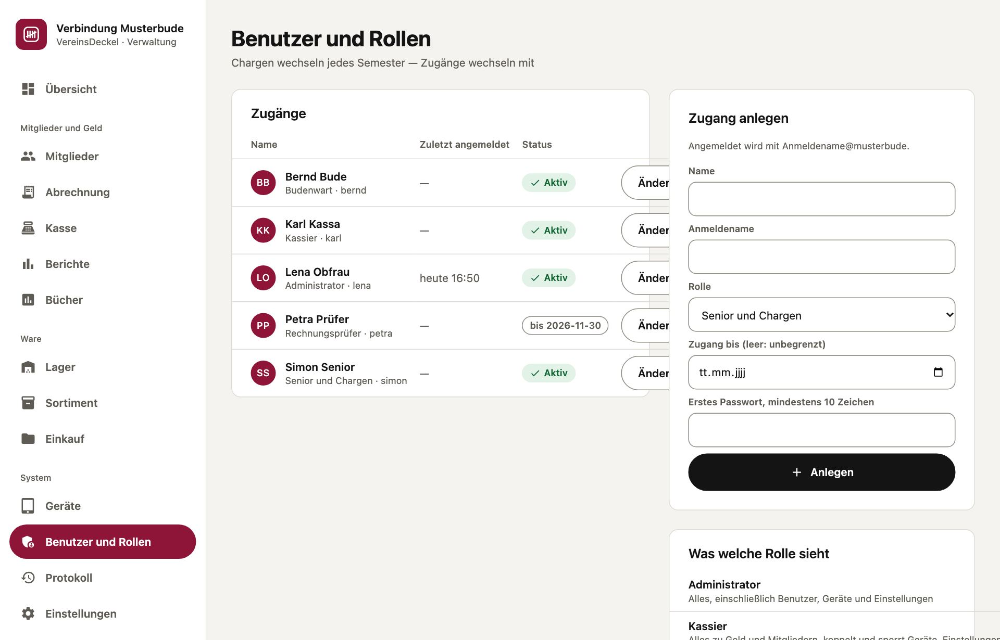
Ein Administrator sieht die Verwaltung mit den Augen eines anderen Zugangs: Anmelden mit admin#karl@musterbude und dem eigenen Passwort. Oben steht dann in Bernstein, wer wirklich davorsitzt, und jede Zeile im Protokoll nennt beide Namen.
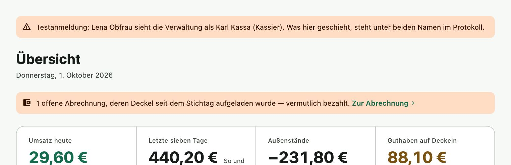
Das Protokoll hält fest, wer wann was getan hat — Anmeldungen, Aufladungen, Korrekturen, Änderungen an Mitgliedern, Sortiment und Einstellungen, gekoppelte und gesperrte Geräte.
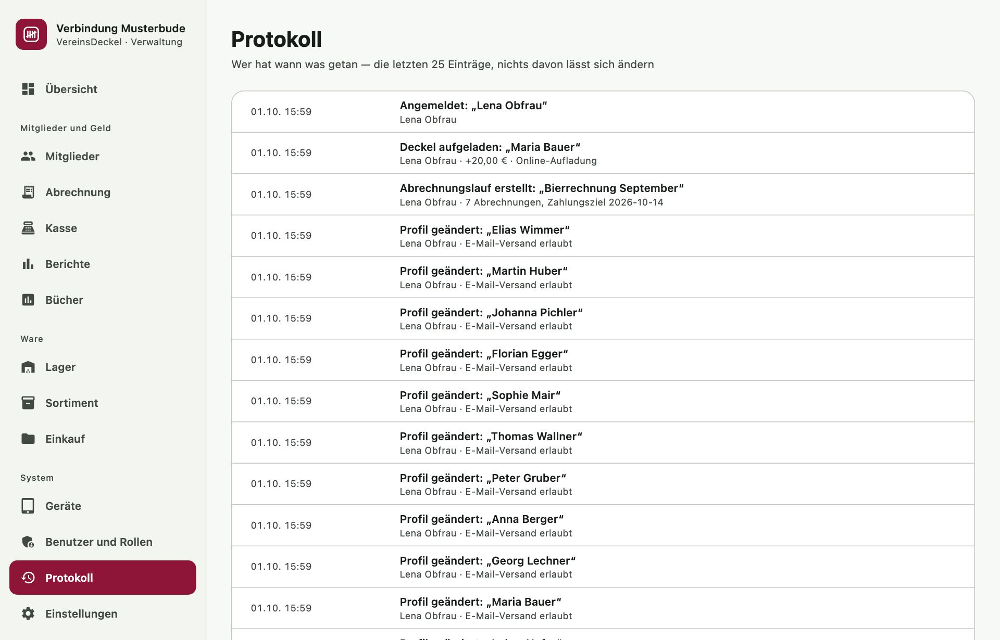
Name, Vereinsfarbe, Rechnungsjahr und Anschrift; das Kürzel des Vereins für die Anmeldung (nur Administrator); was die Tablets bekommen (SumUp-Schlüssel fürs Terminal, tägliche Sicherung); die Bankverbindung für die Abrechnung; der E-Mail-Versand und der E-Mail-Empfang für Rechnungen.
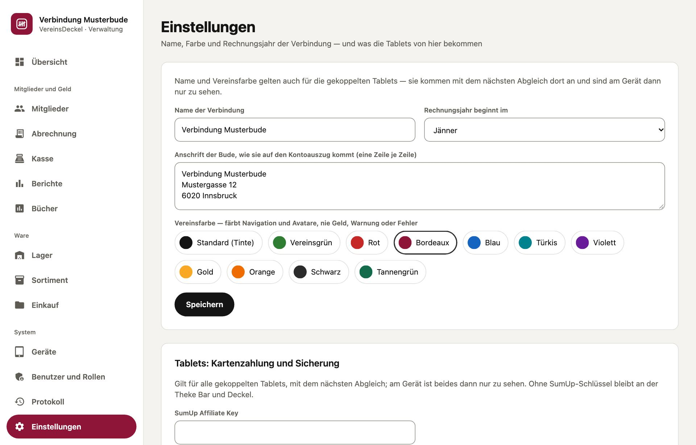
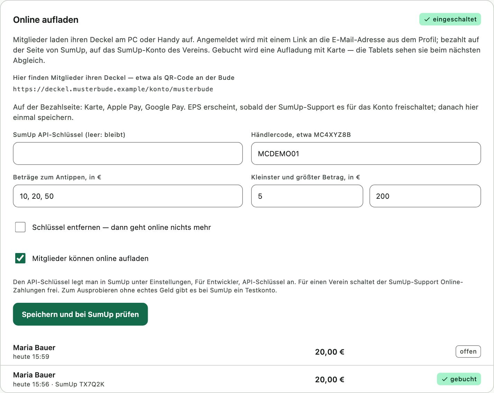
Der E-Mail-Versand muss eingerichtet sein: Die Mitglieder melden sich mit einem Link per E-Mail an. Die Gebühr der Zahlung trägt der Verein — einen Aufschlag für die Zahlungsart erlaubt das Gesetz nicht.
Am Handy zeigt die Verwaltung unten eine Leiste mit Übersicht, Mitgliedern und Berichten; der Rest liegt unter „Mehr“.
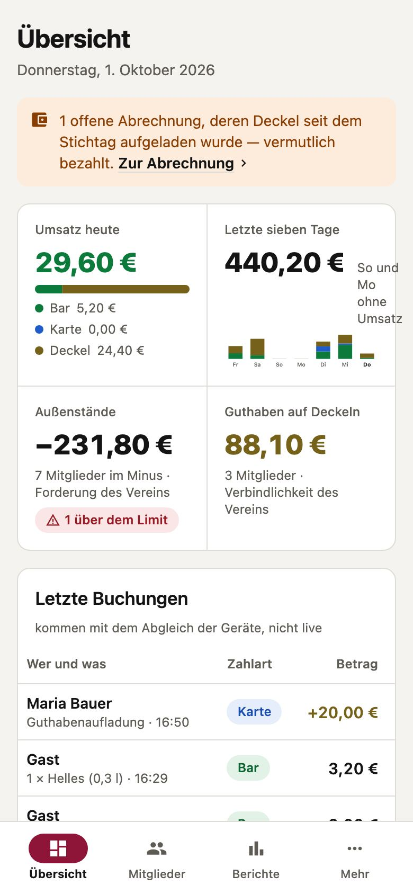
Jedes Mitglied mit E-Mail-Adresse im Profil sieht seinen Deckel am PC und am Handy und lädt ihn auf — mit Karte, Apple Pay oder Google Pay. Den Link gibt der Verein bekannt, etwa als QR-Code an der Bude.
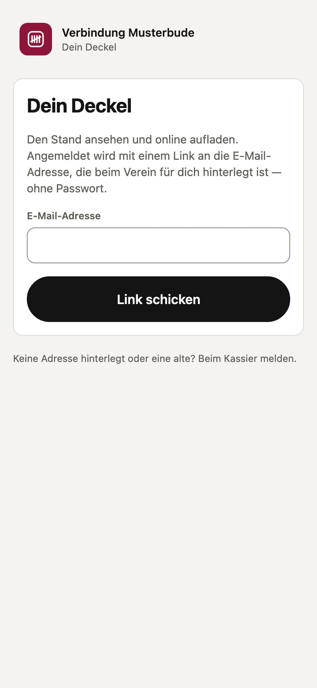
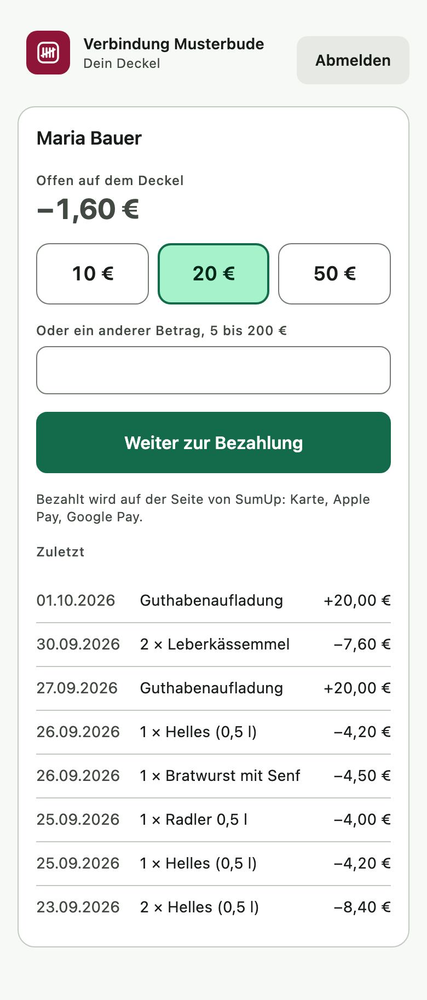
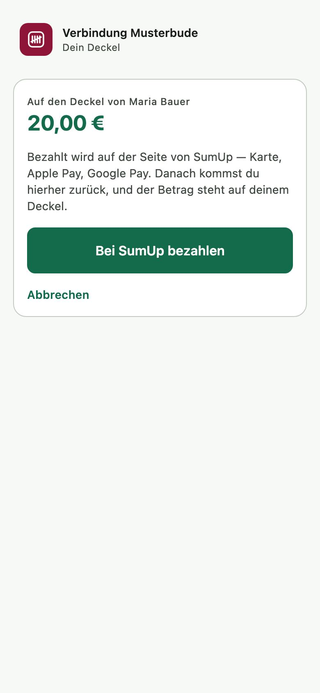
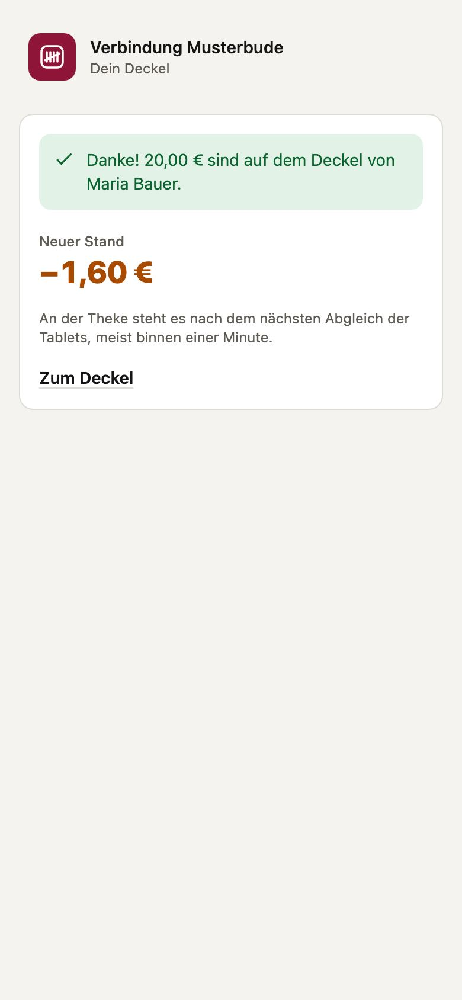
Für wen den Server betreut. Ein Server kann mehrere Vereine tragen, jeden mit eigener Datenbank, eigenen Geräten und Zugängen.
Unter /verwaltung/system, Anmeldung mit name@system. Den ersten Hauptadmin legt man dort einmal mit dem Verwaltungsschlüssel des Servers an (PAIRING_ADMIN_TOKEN in der .env).
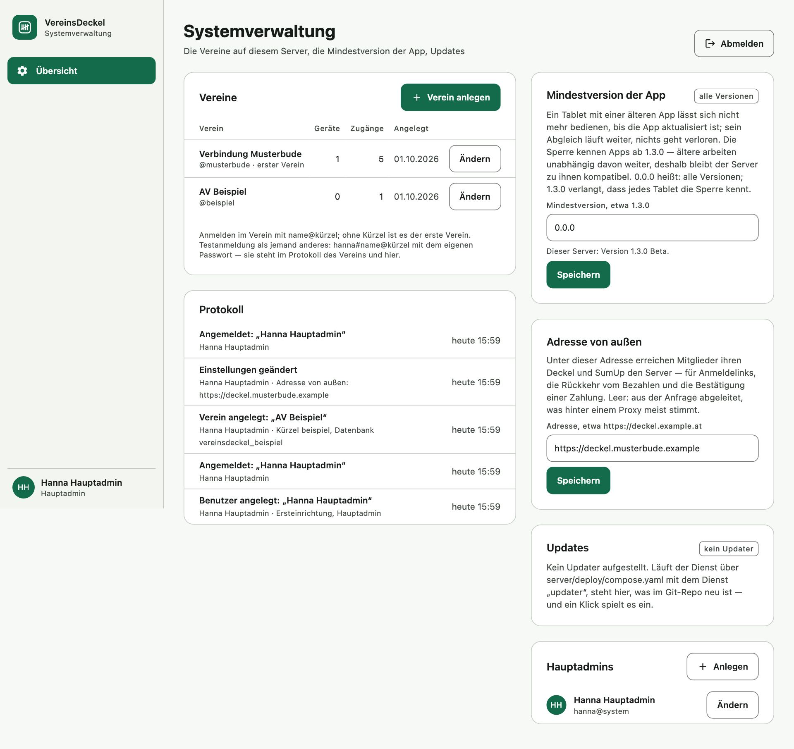
hauptadmin#name@kürzel) — das steht im Protokoll des Vereins.Alle Datenbanken in eine Datei — die Vereine, die Systemdatenbank:
docker compose exec -T db pg_dumpall -U vereinsdeckel > sicherung.sql
Dazu das Docker-Volume media mit den Belegfotos. Vor jedem Update sichern.
| Was ist? | Was tun |
|---|---|
| Am Tablet gibt es kein „Bezahlen“ | Die Kasse ist zu: im Warenkorb Kasse öffnen. |
| „Bar“ ist durchgestrichen | Die Kasse ist ohne Barkasse geöffnet. Bar geht erst, wenn eine Schicht mit Barkasse läuft. |
| „Deckel“ geht nicht | Der Rahmen der Kategorie reicht nicht (die Kachel nennt das Limit), eine Aufladung liegt in der Bestellung, oder der Deckel ist gesperrt (der Grund steht beim Mitglied). Bar oder Karte geht. |
| In der Leiste steht Offline | Das Tablet erreicht den Server nicht. Weiterverkaufen — die Buchungen gehen hoch, sobald das Netz wieder da ist. |
| In der Leiste steht Abgemeldet | Der Server kennt das Tablet nicht mehr. In der Verwaltung unter Geräte einen neuen Code erzeugen, am Tablet Neu anmelden. Nicht „Kopplung lösen“. |
| Die App zeigt nur „Diese App muss aktualisiert werden“ | Die App ist älter als die Mindestversion. Die App aktualisieren; nichts geht verloren. |
| Ein Produkt fehlt in der Verkaufsansicht | Vielleicht ausgeblendet: in der Kategorienleiste ganz hinten unter Ausgeblendet nachsehen. |
| Falsch gebucht | Storniert wird in der App nicht. Auf einem Deckel: unter Mitglieder eine Korrektur mit Grund, oder der Kassier in der Verwaltung. Bar: zeigt sich beim Schließen als Differenz, dort den Grund eintragen. |
| Beim Schließen fehlt Geld in der Lade | Noch einmal zählen. Stimmt es dann immer noch nicht, den Grund für die Differenz eintragen — ohne lässt sich nicht schließen. Die Differenz steht im Kassenbuch. |
| Ein Mitglied kommt nicht in seinen Deckel | Im Profil (Verwaltung, Mitglied) die E-Mail-Adresse prüfen. Online aufladen muss eingeschaltet und der E-Mail-Versand eingerichtet sein. |
| Anmeldung in der Verwaltung klappt nicht | Mit Kürzel des Vereins anmelden: name@kürzel. Abgelaufener oder gesperrter Zugang? Der Administrator sieht es unter Benutzer und Rollen. |
| Ein Tablet ist verloren | In der Verwaltung unter Geräte sperren. |